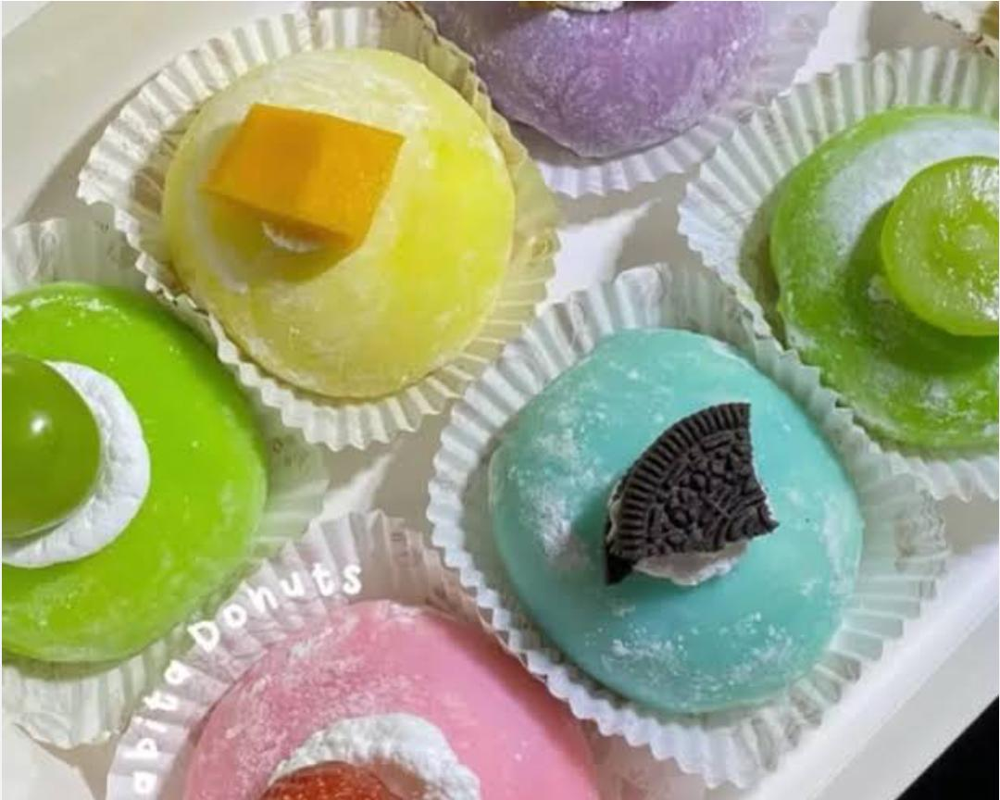
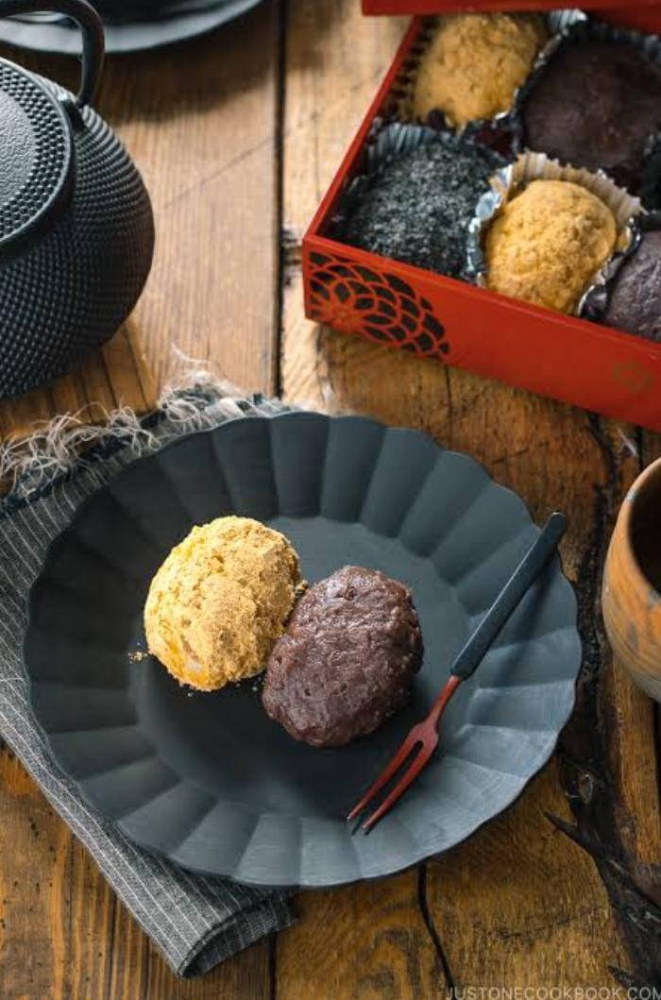
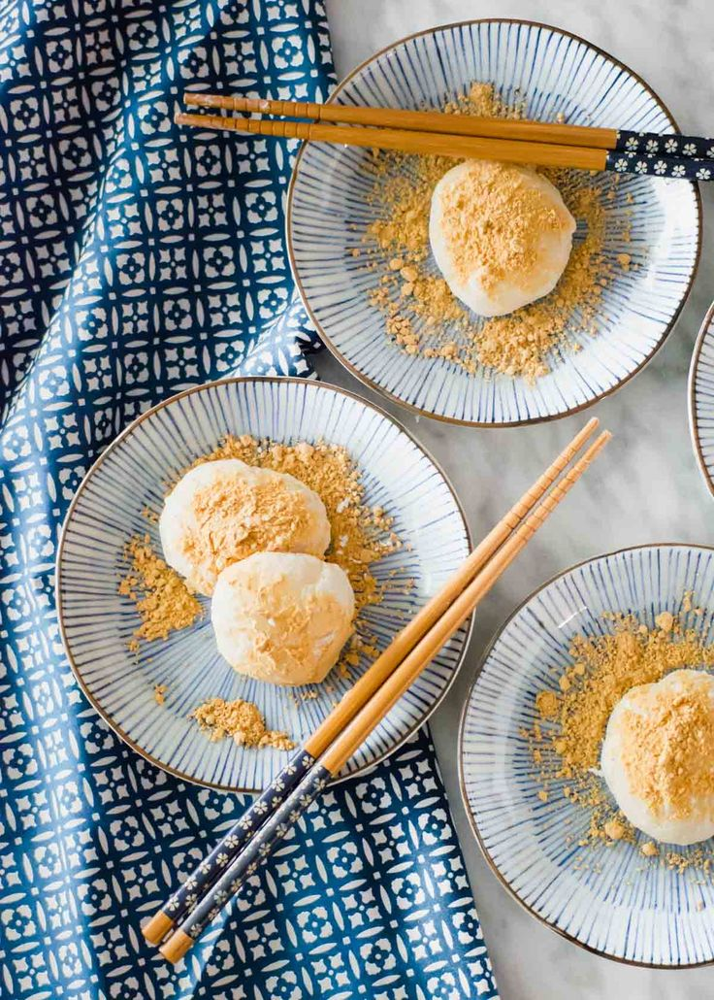
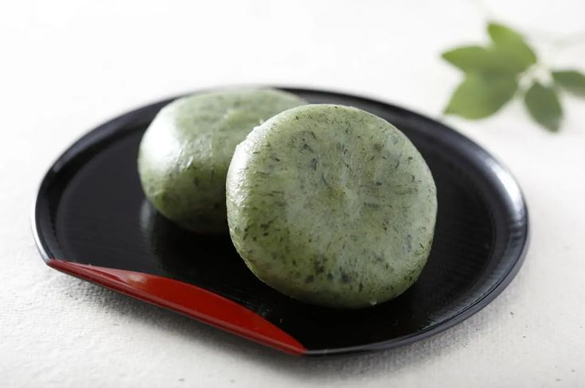
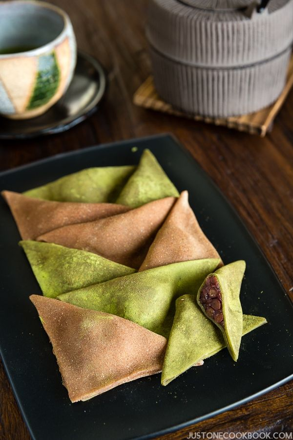
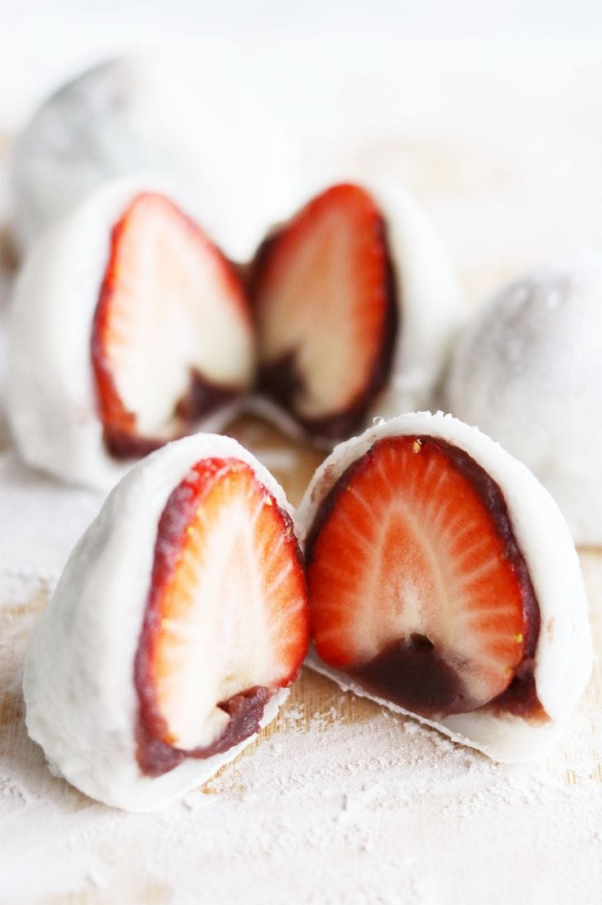
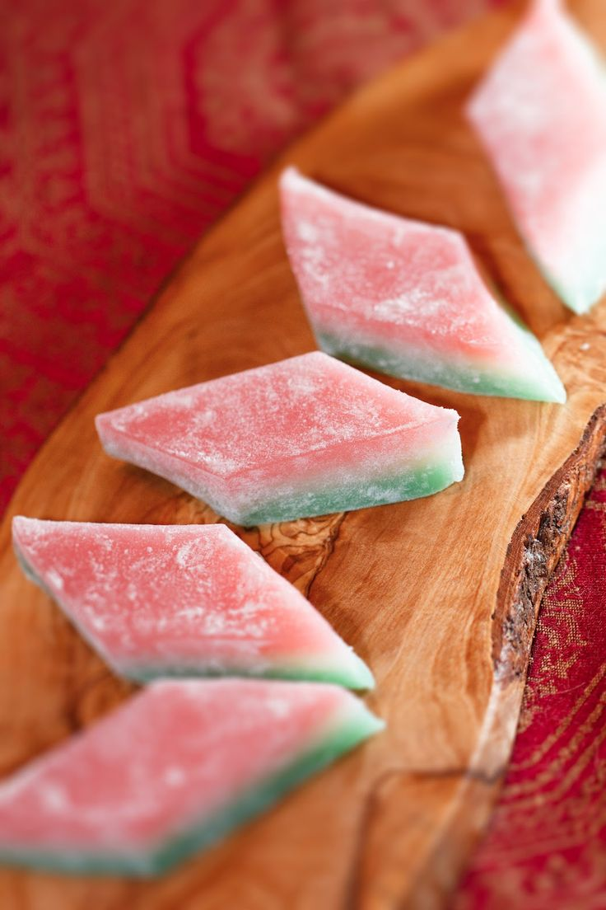
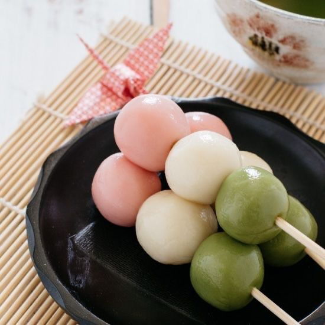

Jenis-jenis Mochi
-

Daifuku
Mochi paling umum, biasanya berisi pasta kacang merah (anko), buah stroberi (Ichigo Daifuku), atau bahkan es krim.
-

Botamochi / Ohagi
Bola mochi dibungkus dengan pasta kacang merah di bagian luar, disajikan saat musim semi dan gugur.
-

Kinako Mochi
Mochi digulingkan dalam bubuk kedelai panggang (kinako) yang memberikan rasa gurih dan manis ringan.
-

Kusa Mochi
Mochi hijau yang dibuat dengan daun mugwort (yomogi), memberi rasa herba segar dan aroma khas.
-

Yatsuhashi
Mochi khas Kyoto berbentuk segitiga, sering diisi pasta kacang atau kinako, tersedia juga rasa matcha dan cokelat.
-

Ichigo Daifuku
Varian daifuku berisi stroberi utuh di dalamnya, populer karena kombinasi manis dan segar.
-

Hishi Mochi
Mochi berbentuk berlian dengan tiga lapis warna: merah muda, putih, dan hijau. Disajikan saat Festival Boneka (Hinamatsuri).
-

Dango
Pangsit dari tepung beras yang ditusuk sate (biasanya tiga hingga lima buah). Tidak sepenuhnya mochi, tapi sangat populer di Jepang.